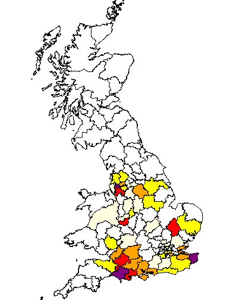

Our Marsh family originate from Yorkshire and have been traced back to Sheffield at the end of the 18th century. Daniel Marsh was born in Sheffield in 1795, christened in the parish church (later Sheffield Cathedral).
Daniel moved from Sheffield to Liverpool and later to Kingston upon Hull, where his son Charles Marsh was born. By 1858 the family had moved to Nottingham.
Charles, after serving in the army, returned to Nottingham and married Henrietta Marshall in 1880. Their daughter Edith Marsh married George Noble, weaving the Marsh family into the Noble story.
Return to Home